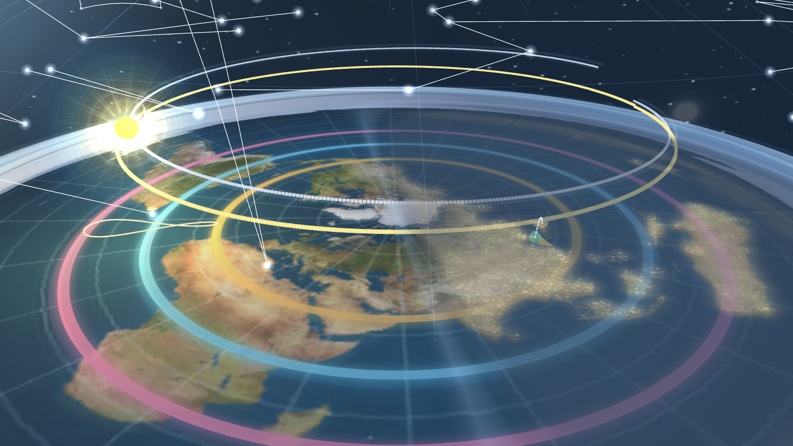

3D Celestial Model
Flat Earth Disc
Interactive astronomy sandbox with live sky motion, eclipse states, moon phases, and constellation overlays.
Live Reality Sync
16-step Moon Phases
88 Constellations

Observer mode
Free Camera
Celestial view
Real-time
Scene focus
Sun + Disc + Orbits